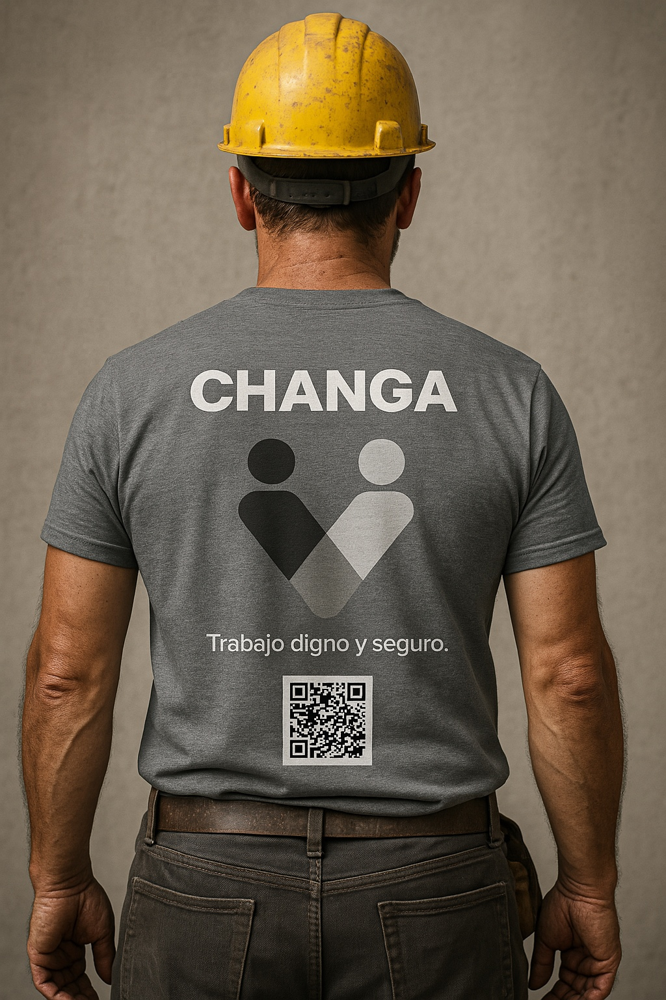

Para changadores
Encontrá oportunidades cerca tuyo y construí historial.
- Explorás changas disponibles
- Te postulás según tu oficio
- Coordinás condiciones
- Sumás reputación
Publicá una changa o encontrá trabajo real en tu zona. Changa conecta personas, clientes y empresas para resolver tareas, suplencias y oportunidades puntuales con más orden, reputación y confianza.

Changa ordena la necesidad, muestra disponibilidad y ayuda a construir reputación desde cada tarea.
Encontrá oportunidades cerca tuyo y construí historial.
Resolvé tareas puntuales sin perder tiempo.
Apoyo operativo cuando falta gente o sube la demanda.
Una forma simple de ver necesidades, disponibilidad y oportunidades cerca tuyo.
Changa no reemplaza el criterio humano: lo ordena. La plataforma ayuda a que clientes, changadores y empresas tengan más información antes de avanzar.
Información básica, zona, rubros, disponibilidad y señales progresivas de verificación.
Reseñas, historial de changas y comportamiento visible para tomar mejores decisiones.
Moderación, reportes, actividades prohibidas y condiciones simples para evitar abusos.

Changa nace para conectar demanda y acción: una tarea pendiente, una falta de personal, una urgencia de barrio, una oportunidad para alguien que quiere moverse.
Estamos preparando el piloto. Quienes entren primero podrán crear perfil, probar el flujo, recibir oportunidades tempranas y ayudar a definir cómo se mueve el trabajo real en Uruguay.
Sumarme al pilotoPrimeros perfiles visibles
Prioridad en el piloto
Reputación desde el inicio
Zonas iniciales limitadas
En la etapa inicial, el changador cobra directo. Changa cobra su fee de gestión por ordenar, conectar y activar la oportunidad.
El pago del trabajo se coordina directamente entre cliente y changador. Changa funciona como plataforma de conexión, gestión y reputación. La plataforma podrá cobrar un fee de gestión por publicar, activar o coordinar una changa, según el caso.
No somos una billetera, no retenemos el pago del trabajador y no redistribuimos fondos del trabajo en esta etapa.
Dejá tus datos para entrar a la etapa inicial. Te contactaremos cuando Changa active tu zona o cuando haya oportunidades compatibles.
Una plataforma para publicar, encontrar y coordinar changas, suplencias y tareas puntuales.
La etapa inicial se enfocará en zonas piloto de Uruguay, con expansión progresiva.
En la fase inicial, el pago del trabajo se coordina directamente entre cliente y changador.